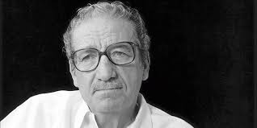

JOSÉ EMILIO PACHECO: José Emilio Pacheco Berny (Ciudad de México, 30 de junio de 1939-Ib., 26 de enero de 2014)3 fue un destacado escritor mexicano que publicó poesía, crónica, novela, cuento, ensayo, crítica literaria y traducción.4 Se le considera integrante de la llamada generación de los cincuenta o de medio siglo, en la que también se incluye a Juan Vicente Melo, Inés Arredondo, Juan García Ponce, Huberto Batis, Sergio Pitol, José de la Colina, Salvador Elizondo, Carlos Monsiváis, entre otros. Compartió la perspectiva cosmopolita5 que caracteriza a los literatos de esa generación, y los temas que abordó en sus textos van desde la historia y el tiempo cíclico,6 los universos de la infancia y de lo fantástico, hasta la ciudad y la muerte. La escritura de Pacheco se distingue por un constante cuestionamiento sobre la vida en el mundo moderno, sobre la literatura y su propia producción artística,7 así como por el uso de un lenguaje sin rebuscamientos, accesible. Comenzó a escribir en la adolescencia, época en la que publicaba en revistas estudiantiles y periódicos como Proa (de la Escuela Preparatoria, Centro Universitario, México, 1955), Diario de Yucatán, Diario del Sureste (ambos de Mérida, 1956-1958); las estudiantiles Índice (1957) y Letras Nuevas, la primera Facultad de Derecho y la segunda de la de Filosofía y Letras de la UNAM.
JAIME SABINES
| JAIME SABINES | ||||||||
|---|---|---|---|---|---|---|---|---|
| Su padre, Julio Sabines nació en Líbano. Sus padres y sus dos hermanos emigraron a Cuba. En 1914 se trasladó a México, donde participó en la Revolución. En Chiapas conoció a Luz Gutiérrez Moguel, nieta de Joaquín Miguel Gutiérrez, militar y gobernador del estado en cuyo honor la capital estatal, Tuxtla Gutiérrez, lleva su apellido. Tuvieron tres hijos: Juan, Jorge y Jaime |  | En 1945 viajó a la Ciudad de México para comenzar sus estudios como médico en la Escuela Nacional de Medicina. Mientras estudiaba, se dio cuenta de que la carrera de medicina no era para él; poco después comenzó su carrera como escritor. Regresó a Chiapas por una corta temporada y estuvo trabajando en la tienda de telas El Modelo, propiedad de su hermano Juan, en donde escribió su célebre poemario Tarumba. | ||||||
Levantarse a escribir antes del amanecer |
Imaginar durante años lo que se quiere escribir |
Escribir estando de pie |
Empezar en una fecha específica |
|||||